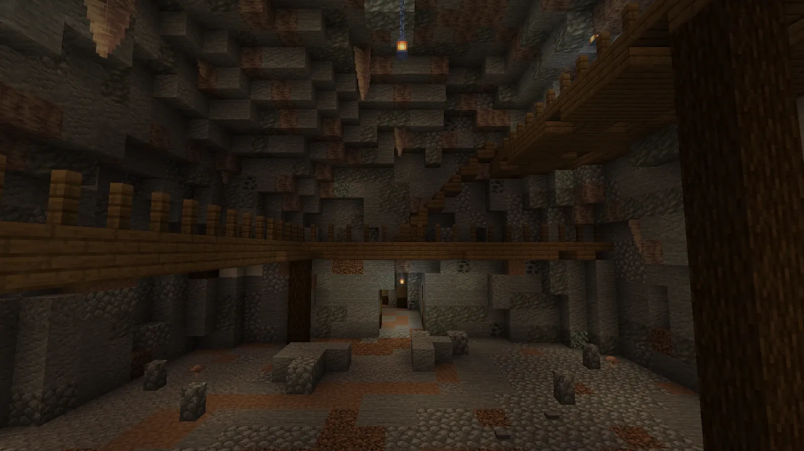
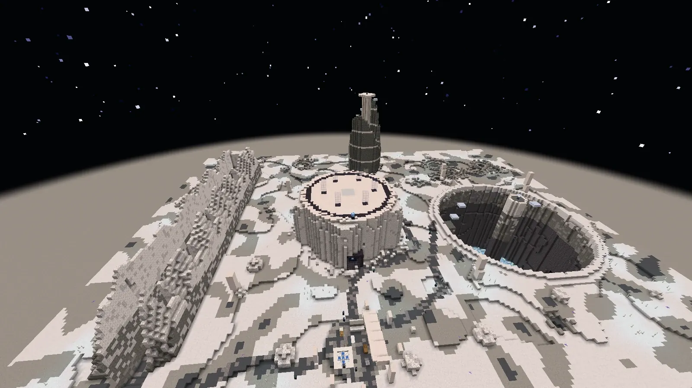
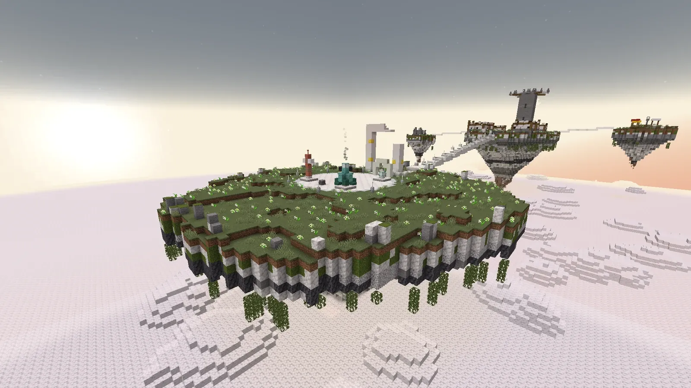
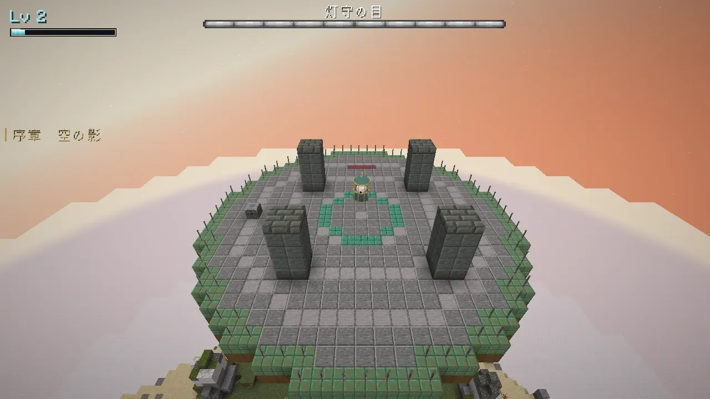
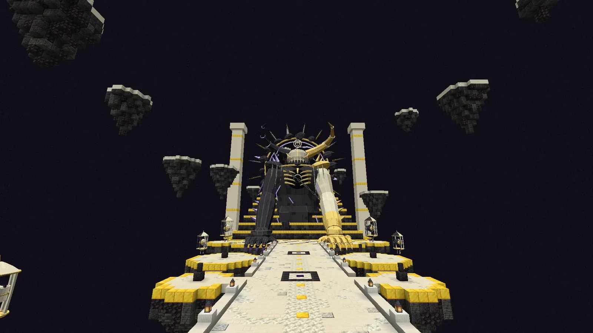

天と淵のあいだ
冒険の場所
巨神の背、地下のダンジョン、深淵、月、雲海、そしてあいだの塔。物語の順に、挑む場所が増えていきます。
TITAN BACKS
巨神の背
巨神ごとに、背中は専用の世界です。到着の台から、三つの部屋、中ボス、心臓へと順に進みます。

- 歩は道を抜ける部屋、智は仕掛けを解く部屋、闘は敵の群れと戦う部屋です。
- 部屋は周ごとに一つずつ引かれ、2 周目からは修飾が付くことがあります。
- 一人でも、6 人までのパーティーでも挑めます。人数で敵が強くなります。
- 休み場の焚き火から再開できます。試練をあきらめると背の入口へ戻ります。
- 心臓を止めると巨神は眠り、天の鍵の欠片と報酬が手に入ります。初めて止めたときは、専用の逸品を一つ選べます。
- 乗れるのは、自分で前の巨神の心臓を止めた人です。一度止めた巨神には、町を出た道ばたの祠から何度でも挑めます。
| 巨神 | 居場所 | 推奨 Lv | 中ボス |
|---|---|---|---|
| 岩鯨 | 空（岩鯨の丘陵の上） | 12 | 番兵長 |
| 潮殻 | 海（潮の浜の沖） | 18 | 潮招き |
| 雷翼 | 嵐の高地の峰 | 24 | 雷獣 |
| 余燼 | 灰の荒野の地の中 | 30 | 灰の鍛え手 |
DUNGEONS
地下のダンジョン
物語とは別に、大陸の地下に四つ。町の案内人の「噂を聞く」から始まります。

- 二つの層と主の間を抜け、主を倒すと入口へ戻ります。
- ダンジョンだけの敵と中ボスがいます。
- 初めて主を倒すと、アクセサリーと称号がもらえます。
| ダンジョン | 土地 | 推奨 Lv | 仕掛け | 主 |
|---|---|---|---|---|
| 鯨骨の坑 | 岩鯨の丘陵 | 10 | トロッコの道で層を下る。掘り場を骨の兵が守る | 骨掘りの大百足 |
| 潮の洞 | 潮の浜 | 16 | 層ごとに水が満ち引きし、引いたあいだに先の道が出る | 殻負いの大蛸 |
| 雷晶の空洞 | 嵐の高地 | 22 | 雷を溜める結晶にスキルを当てて扉を動かす | 背晶の大蜥蜴 |
| 熔けた坑道 | 灰の荒野 | 28 | 時間で流れの変わる溶岩の道 | 炉負いの巨人 |
CHAPTER 5
五章 深淵
都の下の大坑道から入る、地の底の世界です。

- 骨・塩・雷・灰の四つの層が上から重なり、いちばん下に深淵の心臓があります。
- 層の入口の野営が休み場です。骨と雷の層は三本の道の奥の印を集めて門を開き、塩と灰の層は生き残りを護って下ります。
- 上るほど体が重く、闇に長くいると淵の声がたまり、幻と敵が増えます。
- 姿を見せない番人とは、灯籠を点けて回りながら戦います。
- 深淵術（光・重さ・鼓動）を覚えます。クリアすると、番人の悪夢と深淵の深みが開きます。
CHAPTER 6
六章 月
都の大鐘楼の上の門から渡る、月の面です。

- 空は黒く、地上の大陸が頭の上に浮かびます。体が軽く、高く跳べます。
- 月の一日と四つの位相があり、区画ごとに主がいます。
- 前のループの自分たちに出会い、時を縛る月の核を止めます。
- クリアすると、区画の主に段 1〜5 で挑める位相の挑戦が開きます。

FINALE
終章 雲海
足もとは果てない雲の海。雲の島々を渡り、巡礼者の座へ向かいます。

- 雲の島には、巻き戻された世界のかけらが乗っています。
- 雲上の巡礼者とは、形を変えながら三度戦います。
- 結末は三つあります。
- 巡礼者を初めて退けると、自分のジョブの神器が手に入ります。


ENDGAME
物語のあと
結末のあとも、挑む相手は残っています。

あいだの塔は、結末を見たあとに開く超大型のレイドです。橋の上で「あいだに座すもの」と戦います。払い・星の雨・光の柱・落ちる月など、スキルごとの予兆を読んで避けます。
三つの結末をすべて見た人だけが会える裏ボスもいます。
| 遊び | いつから | 中身 |
|---|---|---|
| 背の周回 | 一章から | 祠から巨神の背へ。ジョブのヒロイック武器の抽選 |
| 踏破の記録 | 一章から | 巨神ごと・人数ごとの最速の記録と、週替わりの「速い踏破」 |
| 深淵の深み | 五章のあと | 心臓の下の果てない深み。5 階ごとに歪んだ王 |
| 位相の挑戦 | 六章のあと | 月の区画の主に、段 1〜5 で挑み直す |
| 巡礼の試し | 終章のあと | 巡礼者の三つの形に、段 1〜5 で挑み直す |
| あいだの塔 | 結末を見たあと | 主との戦いだけの超大型レイド。塔の箱と塔の店に神器 |
| 裏ボス | 三つの結末を見たあと | 語り部の数え歌の続きに出てくる一騎打ち |
| 転生 | Lv 50 から | 恩恵と称号。20 回まで |
| 言伝ての板・組合の頼み | 一章から | 日替わり・週替わりの頼み |